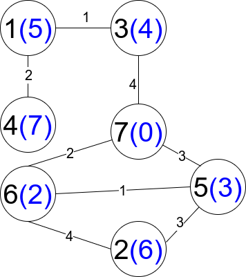

There is an undirected weighted connected graph. You are given a positive integer n which denotes that the graph has n nodes labeled from 1 to n, and an array edges where each edges[i] = [ui, vi, weighti] denotes that there is an edge between nodes ui and vi with weight equal to weighti.
A path from node start to node end is a sequence of nodes [z0, z1, z2, ..., zk] such that z0 = start and zk = end and there is an edge between zi and zi+1 where 0 <= i <= k-1.
The distance of a path is the sum of the weights on the edges of the path. Let distanceToLastNode(x) denote the shortest distance of a path between node n and node x. A restricted path is a path that also satisfies that distanceToLastNode(zi) > distanceToLastNode(zi+1) where 0 <= i <= k-1.
Return the number of restricted paths from node 1 to node n. Since that number may be too large, return it modulo 109 + 7.
Example 1:

Input: n = 5, edges = [[1,2,3],[1,3,3],[2,3,1],[1,4,2],[5,2,2],[3,5,1],[5,4,10]]
Output: 3
Explanation: Each circle contains the node number in black and its distanceToLastNode value in blue. The three restricted paths are:
1) 1 --> 2 --> 5
2) 1 --> 2 --> 3 --> 5
3) 1 --> 3 --> 5
Example 2:
Input: n = 7, edges = [[1,3,1],[4,1,2],[7,3,4],[2,5,3],[5,6,1],[6,7,2],[7,5,3],[2,6,4]]
Output: 1
Explanation: Each circle contains the node number in black and its distanceToLastNode value in blue. The only restricted path is 1 --> 3 --> 7.
Constraints:
1 <= n <= 2 * 104n - 1 <= edges.length <= 4 * 104edges[i].length == 31 <= ui, vi <= nui != vi1 <= weighti <= 105- There is at most one edge between any two nodes.
- There is at least one path between any two nodes.